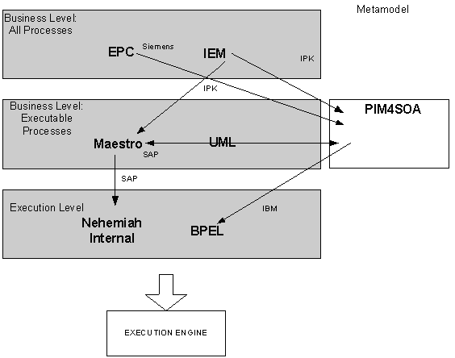

")

Cross-organisational business processes
Introduction
The ATHENA CBP modelling approach combines two ideas:
- Different user groups and modellers are involved in modelling cross-organizational business processes. Their different perspectives and needs have to be reflected in the modelling method.
- The modelling method should allow for selectively hiding internal process steps while offering a mechanism to expose CBP relevant information to partners.
Therefore we propose a CBP modeling framework in the form of a matrix. The different levels on which CBP modeling is performed (business level, technical level, implementation level) are represented on the vertical axis. On the horizontal axis the different model types of the process view concept are shown. At each intersection of a vertical and horizontal axis, we can identify a possible process model to capture tasks and relationships of cross-organizational interactions. Thus it is ensured that all relevant perspectives on CBP models as well as the processes required for the view concept are properly captured and modeled.
Transformations between the different modeling levels are necessary. Between the business level and the technical level they can be executed semi-automatically, between the technical level and the execution level they can be automated.
Tools
The following ATHENA tools are available for designing and implementing cross-organisational business processes:
- MO²GO is an enterprise modelling tool. MO²GO supports the integrated enterprise modelling (IEM). MO²GO NG has as well been extended to support modelling of CBPs on the business level. It also provides export functionality to transform process models from the business level to the technical level. This supports re-use of process models so that users do not have to completely re-model processes when enriching them with information relevant for execution.
- ARIS is an enterprise modelling tool. The Architecture of Integrated Information Systems (ARIS) supports the modelling of Event-driven Process Chains (EPC). ARIS has been extended to support the methodology for modelling of CBPs on the business level. To model CBPs each partner starts from a private process describing the steps executed in its organisation. Then a view process is created that provides a process-oriented interface to the partners whilst at the same time hiding internal process steps that should not be published. The CBP then links the view processes of all partners and defines at which steps data and messages area exchanged between partners.
- Maestro is a Business Process Modeling Tool on a technical level that allows for modeling of private processes, view processes, CBPs and their links. Processes modeled in Maestro can be exported into the Nehemiah enactment engine for execution. Maestro also offers functionality to manage business partners that provide view processes to be added to a common CBP. Partners can be added and changed in Maestro and are directly updated in the Nehemiah repository.
- Nehemiah is an implementation of the ATHENA Process Engine. Nehemiah is a Business Process Management Engine that executes cross-organisational business processes in a distributed environment and supports the process view approach. Nehemiah has a Web front end for controlling and monitoring the execution state of the CBP in a Web browser.
- ATHENA Event and Document Correlation (AEDoC): Each process and resource involved in the execution of a Cross-Organisational Business Process (CBP) has to be exclusively identified. This identification is used to link together CBPs, process instances and message payloads. In order to sustain this duty, the ATHENA Event and Document Correlation (AEDoC) provides a set of basic services for matching documents to process instances. The execution of a CBP requires that private documents and events are continuously linked to the correct process instances that can run all the different process engines in the whole architecture of the collaborating parties.
Model transformations
In order to facilitate the CBP modelling method and to end up with executable models, various model transformations are necessary. The figure below shows all necessary and implemented model transformations within ATHENA and the responsible partner:
- ARIS EPC to PIM4SOA: The ARIS EPC to PIM4SOA transformation tool provides means to transform ARIS business level description to platform indepent, service-oriented PIM4SOA models. ARIS XML export (AML) is transformed to a XMI serialisation of PIM4SOA models. The transformation makes us of and is based on the ARIS modelling style for cross-organizational business processes (CBPs). It translates business process models to platform independent ICT models based on a service-oriented architecture.
- Mo²Go IEM to Maestro and PIM4SOA: Mo²Go also provides export functionality to transform process models from the business level to the technical level. To directly link to Maestro a specialized IEM–BPDM export is available. The output file format is XMI 1.2 and uses UML 1.4. The resulting files can be imported in UML tools and into Maestro for further use. Additionally an export to PIM4SOA models as an intermediate format is available. In particular the view processes are transformed. The processes in MO²GO can be annotated to indicate executable, non-executable processes or processes requiring user interactions. This information is used to transform only execution relevant processes.
- PIM4SOA to BPEL: Allows users to take a PIM4SOA model (e.g. generated from higher level tooling) and convert to an execution platform (BPEL). Rather than a direct model to text transformation, the web service layer PSM transformations make use of platform specific models. For the BPEL transform, an Ecore / EMF model of BPEL has been created to manipulate the transformed process. The EMF implementation of BPEL is generated directly from the XSD (BPEL schema).

Need for task management
Distributed, knowledge based cooperation must be supported by flexible information systems (IS). Business process systems such as workflow management, enterprise resource planning, and supply chain management, apply models to facilitate work performance, control, management and coordination. In these systems, process modelling and execution are separated, performed at different times, by different people, using different tools. While capable of automating routine procedures (the left end of the process spectrum depicted below), such systems cannot handle ad-hoc, evolving processes (the right end). These processes are becoming increasingly important in the global, networked economy, so the scope of process support should be extended.